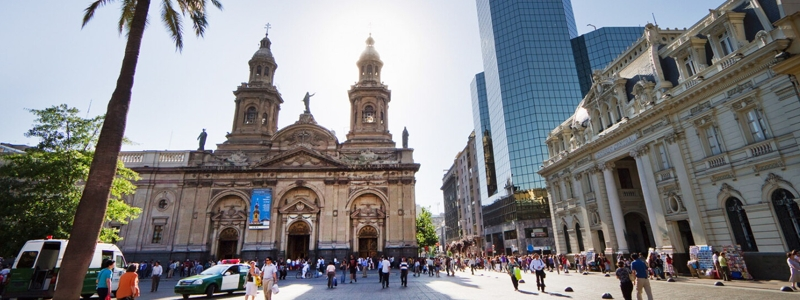
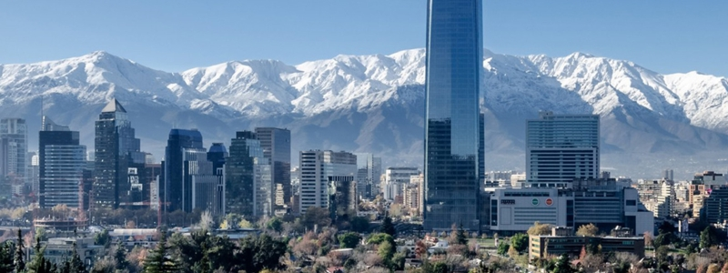
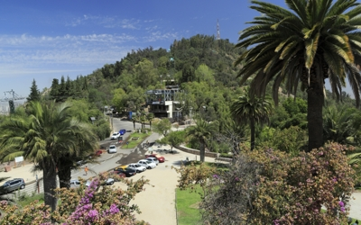
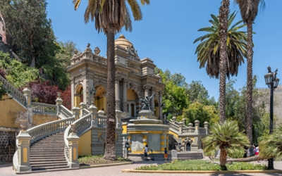

Ruta Gastrónomica
Conoce los barrios
Desde la cocina tradicional chilena hasta las más exóticas propuestas internacionales, hay un barrio para cada gusto y ocasión.
Ver másDesde la cocina tradicional chilena hasta las más exóticas propuestas internacionales, hay un barrio para cada gusto y ocasión.
Ver más
Una vibrante red de espacios culturales que dan vida al arte, la música, el teatro y la creación contemporánea invitan a descubrir la identidad, historia y diversidad de la ciudad.
Ver más
En pocas horas, Santiago te sorprenderá con la riqueza de su patrimonio cultural viviendo experiencias de aventura y naturaleza en su lado más rural.
Ver más

